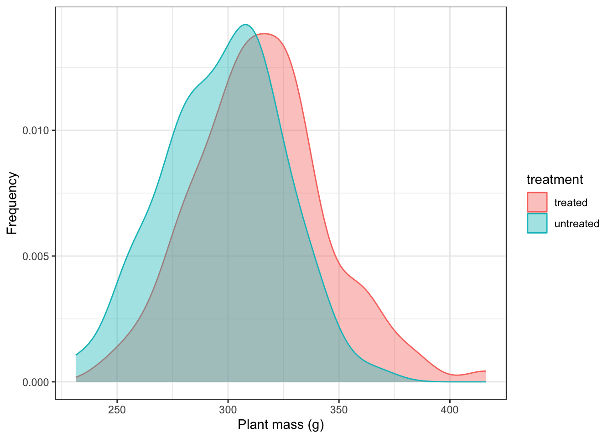
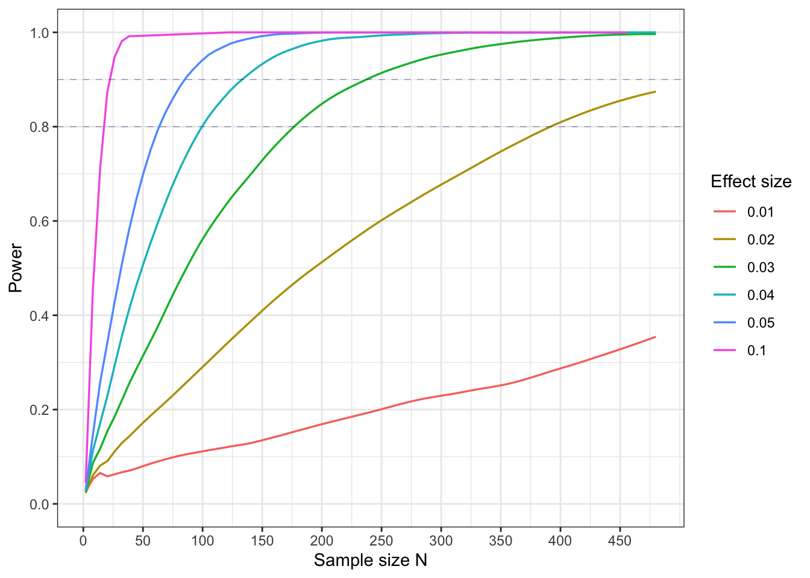

N<-100
delta<-0.05 # ie 10% ie the mean of the treatment population is 10% greater than that of the control population
# set up the sample parameters: means and standard deviations
m1<-300
sd1<-30
m2<-(1+delta)*m1
sd2<-sd1
untreated<-rnorm(N,m1,sd1) # the control sample
treated<-rnorm(N,m2,sd2) # the treated sample
# put these samples in a tidy tibble
trial_data <- tibble(treatment = c(rep("untreated", N), rep("treated", N)),
mass = c(untreated, treated))16 Power Analysis
This topic is all about how to design our studies such that they are likely to detect an effect, whether that is a correlation or a difference, if there really is one there to be detected. If there were, and we didn’t that would be a shame (and a waste of time and money and possibly an ethical hoohah).
In what follows we focus on a simple study that seeks to detect a difference between two populations, but the ideas generalise to other designs.
Suppose we have a magic soil supplement that we hope will enhance the growth rate of tomato plants, make us rich and pay for a comfortable retirement.
Before riches, however, we have to be sure that it has the desired effect. For the supplement to be a money spinner let’s suppose that we need it to enhance the growth rate of plants by 10% and so we must do a study to see if this is in fact the case.
In a properly randomised design, we take N plants and give them ‘normal’ plant food, and another N plants and give them the normal food plus our supplement. We keep all other conditions the same for the two groups of plants.
After 30 days, the plants grown with the usual food grow with a mean mass of 300g and a standard deviation of 30g. The other plants will need to have a mean mass of at least 330g, and we will suppose that they too will have a standard deviation of 30g.
16.1 Simulation of one trial
Suppose we chose N = 100. Then we can simulate the masses of the individual plants in the two samples, supposing there were a 10% effect of supplement. We do this by using the rnorm() function to draw samples of 100 replicates each from a normally distributed population, in one case with a mean of 300g and in the other with a mean of 330g, both with standard deviations of 30g
# plot these simulated data
trial_data |>
ggplot(aes(x=mass,colour = treatment, fill=treatment)) +
geom_density(bins=20, alpha = 0.4) +
# geom_jitter(colour="gray50",width=0.2) +
labs(x="Plant mass (g)",
y="Frequency") +
theme_bw()
Suppose the supplement really did work like this, and really did improve growth rates by 10%. How many plants, ie what value of N would we need in each group in order to have an 80% chance of correctly spotting this difference? This probability of detection of an effect that is there is what we call the power of a study. If the effect is smaller than 10% (or whatever boost we deemed sufficient) and we do not detect it we do not mind, since that means that our supplement had not worked as we had hoped, but it would be a waste of our time and money if there really were a sizeable effect but we did not spot it because our sample size was too small. Equally, we do not want a sample size that is far larger than is necessary to achieve sufficient power. Doing so would incur unnecessary time and money costs and possibly have ethical implications.
In thinking about how we might analyse our data we formulate a null hypothesis:
The supplement has no effect.
In that case we would expect the difference between the masses of the treated plants and untreated plants to be zero.
If in fact the supplement has an effect on growth, then the data should force us to reject this null hypothesis. In order that there be at least an 80% chance that it does this, there has to be an at least 80% chance that the mean value of our treated plants lies outside the rejection regime of the null hypothesis.
With one pair of samples of plants, we might or might not detect the effect, depending on which individuals ended up being included in the samples that we drew from their respective populations, since this would determine whether the mean of the treated plants was or was not in the rejection regime of the null. Thus, if we ran a t-test on our two simulated samples, we might or might not get a p-value that is less than our chosen significance level,
t.test(mass~treatment,data=trial_data)$p.value[1] 1.640478e-05Wht we want to know is: what is the chance that we would get the ‘correct’ result, which in our case is that there is a difference and which would be indicated to us by the p-value being less than our chosen significance level (for brevity’s sake, let’s just assume from now on that we chose this to be 0.05), so that we (correctly) reject the null hypothesis of there being no difference.
16.2 Simulation of many trials
A way to find out is to carry out this simulation many times and see in what fraction of our trials we see a significant effect (that is, p < 0.05), supposing that the supplement really does work. That will give us an idea of the power of our study.
That is what we will now do:
We write a function that will return TRUE or FALSE depending on the p-value of a trial in which we specifiy the mean value of the control group, the standard deviation of the control group (assumed to be the same in the treatment group), the size of the effect delta, where if delta is 0.1, say, then we mean that the effect size is a 10% increase in growth mass, N is the sample size for each group and alpha is the significance level that we choose (most likely, but not necessarily 0.05).
In the function we carry out a t-test for each pair of samples to determine whether we can reject the null hypothesis that the treated plants are drawn from a population with the same mass as the untreated plants.
We know that the null hypothesis is false because we have drawn our samples from populations that do differ in their mean values. We want to see if our test correctly rejects the null so that we detect the effect, which here is the mass difference between the means of the two groups of plants.
If the p-value is less than our chosen significance level then we reject the null, if not, we do not.
Rejecting the null in this case means we have a ‘True Positive’ and so we make our function return the logical value TRUE in that case. Failing to reject the null in this case is a mistake. We call this kind of mistake a ’False Negative” and when this happens me make out function return the logical value FALSE.
effect_detected<-function(m1,sd1,delta,N,alpha){
pop1<-rnorm(N,m1,sd1)
pop2<-rnorm(N,m1*(1+delta),sd1)
return(t.test(pop1,pop2)$p.value<alpha) #return TRUE if p <0.05, return FALSE if not.
}16.3 Calculate the power of the study for a range of sample and effect sizes
Now we run this trial as many times as we want. Let us run it 10,000 times, for a range of sample sizes and effect sizes. In any one trial we may or may not reject the null. We want to see, for a given set of conditons, in what fraction of trials, in the long run, we do reject the null. That will be an estimate of the power of our study: the likelihood that we will detect an effect if the effect really exists, as it does here.
trials<-10000
m1<-300
sd1<-30 # population standard deviation
deltas<-c(0.01,0.02,0.03,0.04,0.05,0.1) # effect size where, for example, 0.05 means that the effect is 5% the size of the control mean
N<-100 # sample size
alpha<-0.05 # chosen significance level
Ns<-c(seq(2,9,1),seq(10,50,10),seq(60,200,20),seq(240,480,40))
power_vals_raw<-matrix(rep(0,length(Ns)*length(deltas)),ncol=length(deltas))
for(i in 1:length(Ns)){
for (j in 1:length(deltas)){
trial_results <- replicate(trials,effect_detected(m1,sd1,deltas[j],Ns[i],alpha))
power_vals_raw[i,j]<-mean(trial_results)
}
}
power_vals <- as.tibble(power_vals_raw)
names(power_vals) <- deltas
power_vals <- power_vals |>
mutate(N=Ns) |>
pivot_longer(-N,names_to = "effect_size", values_to = "power")Plotted, this looks like:
power_vals |>
mutate(ok=power>0.8) |>
ggplot(aes(x=N,y=power,colour=effect_size)) +
# geom_point() +
geom_smooth(method = "loess", span=0.25, linewidth=0.6, se=FALSE) +
# geom_line() +
scale_x_continuous(breaks=seq(0,max(Ns),50)) +
scale_y_continuous(breaks=seq(0,1,0.2), limits=c(0,1)) +
geom_hline(yintercept=0.8,linetype="dashed",colour="darkblue", linewidth = 0.1) +
geom_hline(yintercept=0.9,linetype="dashed",colour="darkblue", linewidth = 0.1) +
labs(x = "Sample size N",
y = "Power",
colour ="Effect size") +
theme_bw()
In this plot we show how the power varies with sample size N, for different effect sizes (where 0.05, say, means a difference of 5% in populations means), with a population standard devation of 30 g on a control mean of 300g, and a significance level of 0.05.
What is a suitable sample size for a power of 80%?
We see that we need a sample size of about 65 to get a power of 80%.
What sample size would be needed for a power of 90%, or 99%?
We need sample sizes of 85 for a power of 90% and of 150 for a power of 99%. There are progressively diminshing returns once you try to make the power much greater than 80% or 90% or so. The sample sizes needed become very large.
Now try varying the effect size, the population variation and the chosen significance level and see how they affect the power.
We should find that, all else being equal:
- If the effect size is reduced, the power decreases. It is harder to tell apart two populations that do not differ by much.
- If the population variation goes down the power increases. It is easier to tell apart two populations if there is little variation within each population.
- If the signicance level is reduced, say to 0.01 from 0.05, the power will go down. We are reducing the type 1 error rate, but at the same increasing the type 2 error rate. It is les likely, even if there is an effect, that we will detect it.
16.4 Factors that affect the power of a study
What factors about a study force you to have larger sample sizes for a given power?
If the effect size is small, the population variation is large or the significance level required is small.
How would you know what the variation of your population is? How could you reduce this?.
You might look at the literature. Very likely, someone has done a study similar to yours. What variation did they see? Alternatively, you could do a pilot study and with relatively little effort get an idea yourself of the variation within your population of interest of the attrivute you want to measure.
What downside might there be to reducing the population variation, supposing you could do it, in order to increase power?.
You can sometimes reduce the variation within the population that you are studying by restricting variation in causal factors that do not interest you for that particular study, but which might also be contributing to variation in the outcome variable that does interest you. So while your study might focus on the impact of soil treatments on growth rates of seedlings, for example, it may be that soil moisture also affects growth rate. Hence if you ensure that all seedlings are grown under the same moisture conditions, you will remove any variation in growth rates due to that, and hence reduce the total varation. This will increase the power of your study - where by that we mwan the likelihood that you will detect any difference that your soil supplement made to growth rate.
The downside to this approach is that you will restrict the applicability of your study. In the example above, having applied the supplement and observed some difference or not compared to a control sample, you could only make inferences to populations of seedlings that were grown under precisely the soil moisture conditions you chose for your study. You could no longer make statements about the supplement preferences of seedlings grown under any old soil moisture conditions.
An alternative approach, which preserves both power and range of applicability is to change the design of the study. In this case, instead of making it a one-factor study in which growth rate is measured against supplement presence or absence, we could also measure the soil moisture and include this in the analysis. If we had measured discrete levels of soil moisture, we would now have a 2-way ANOVA, and if we had measured it as a continuous variable we would have an ANCOVA.
How would you know what the effect size was, and could you increase it?
The same applies here as for the variation. You could look at the literature. Someone else has very likely done a similar study. What effect size did they observe? Or, you could do a quick and dirty pilot study. Unlike the population variation thing, however, it is easier to detect an effect if the effect size is bigger. Is there anything you can do to increase it? In an observational study in the wild, perhaps not but in a manipulative study perhaps you can. In our example we might use large doses of supplement rather than small ones, hoping to see a larger effect as a result.
What assumptions have gone into this power calculation?
We assumed here that our samples were drawn from normally distributed populations with equal variances. In our simulations we knew that was the case because me made it so by design, but we could have given them any distribution or variance we wanted. Simulations are a very powerful tool.